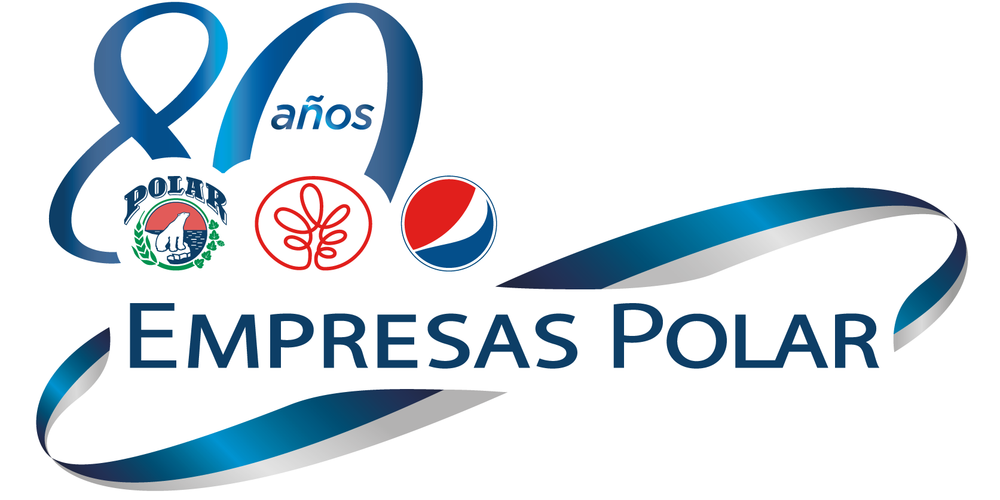

<nav class="navbar navbar-dark bg-primary">
      <a class="navbar-toggler" data-toggle="collapse" data-target="#navbarSupportedContent" aria-controls="navbarSupportedContent" aria-expanded="false" aria-label="Toggle navigation"
      (click)="MostrarMenu()"><i class="fas fa-bars"></i></a>
      <a href="/" class="navbar-brand"></a>
      <ul class="navbar-nav ml-auto d-flex flex-row">
        <li class="nav-item">
          <a class="nav-link mr-3 font-weight-bold" routerLink="/inicio"><i class="fas fa-home"></i> inicio</a>
        </li>
        <li class="nav-item ">
          <a class="nav-link mr-3 font-weight-bold" routerLink="/login"><i class="fas fa-home"></i> iniciar sesion</a>    
        </li>
      </ul>
</nav>


<router-outlet></router-outlet>
